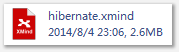
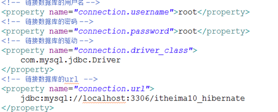

0.建立配置
hibernate的配置文件可以分为两个部分
1、数据库的连接配置

2、其他配置
3、建立持久化类和映射文件
Person.java
Person.hbm.xml
4、把映射文件加入到hibernate的配置文件中
5、写api
1、先根据持久化类和映射文件创建数据库中的表
注意：
在hibernate的配置文件中
<property name="hbm2ddl.auto">update</property>


1.执行过程：
1、创建Configuration对象
2、利用Configuration对象的config方法加载配置文件
3、config.buildSessionFactory方法产生SessionFactory
sessionFactory
1、包含了数据库的链接信息
2、配置文件的信息
3、映射文件的信息
4、持久化类的信息
5、一个sessionFactory表明链接了一个数据库
6、sessionFactory是一个单例的对象
4、sessionFactory产生session
session
1、创建一次session,就打开数据库的链路一次
2、session的打开和关闭的次数越多，效率越低
3、session中的一级缓存缓存了数据
5、由session创建事务
6、进行crud的操作
7、提交事务
8、关闭session
1、创建Configuration对象
2、利用Configuration对象的config方法加载配置文件
3、config.buildSessionFactory方法产生SessionFactory
sessionFactory
1、包含了数据库的链接信息
2、配置文件的信息
3、映射文件的信息
4、持久化类的信息
5、一个sessionFactory表明链接了一个数据库
6、sessionFactory是一个单例的对象
4、sessionFactory产生session
session
1、创建一次session,就打开数据库的链路一次
2、session的打开和关闭的次数越多，效率越低
3、session中的一级缓存缓存了数据
5、由session创建事务
6、进行crud的操作
7、提交事务
8、关闭session
2.执行级联删除操作的时候：
需要设置级联属性:---在Classes.hbm.xml文件中： <set name="students" cascade="delete">
3.hibernate的流程
说明：
1、通过Configuration的config方法加载hibernate的配置文件
2、SessionFactory
一个sessionFactory代表数据库的描述
配置文件的信息、映射文件的信息、持久化类的信息全部在sessionFactory中
一个数据库只能有一个sessionFactory
sessionFactory对象本身是线程安全的
hibernate的二级缓存在sessionFactory中，二级缓存的存放地方：
SessionFactoryImpl:
private final transient Map entityPersisters;
3、crud操作都是由session来完成的。
4、操作完成以后必须关闭session。
4.hibernate配置文件的加载的两种方式
1、hibernate配置文件的加载
1、

2、
根据指定的路径进行加载。